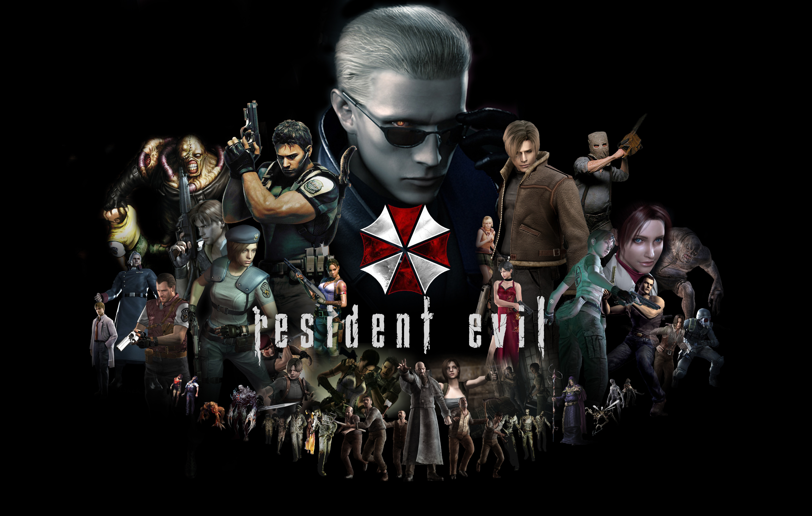
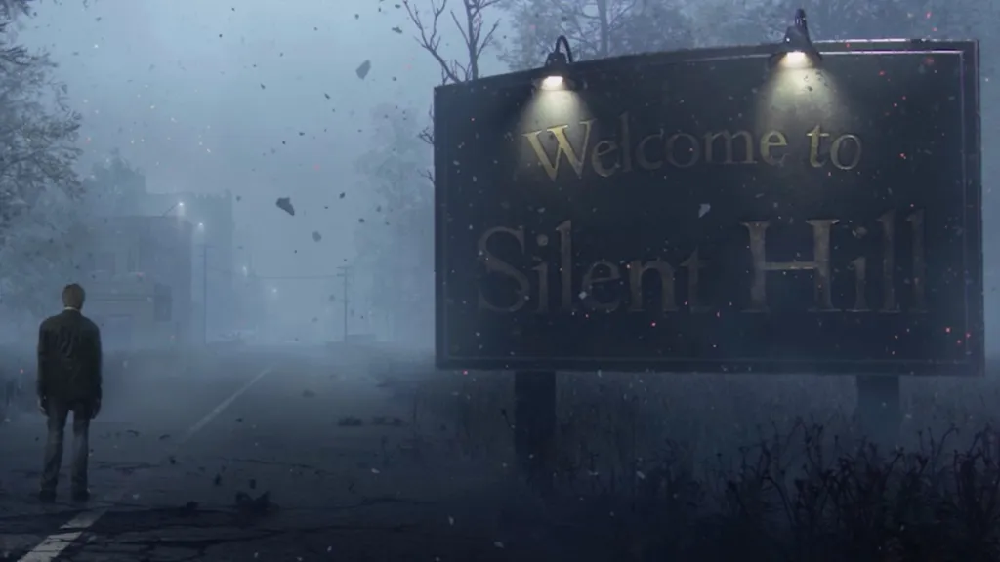

Welcome My Friend

Flying by Tatan Cediel. Taken on 2023
"Life is like riding a bicycle. To keep your balance, you must keep moving." -Albert Einstein
Know me a little
My name is John, I am (put your age here).... I'm not going to tell you my age, that's so rude. I am from this beautiful city Bogotá which I love with my heart. Since I was a kiddo I love videogames, the sports, especifically the extreme sports, that is the reason why I practice Enduro on weekends, of course, when I have enough time to do it. Regarding videogames, gosh, if I'm not wrong, I borrowed
20 pesos from my dad just to go to the arcade machine next to my home to play Super Mario.
People used to say I'm a kind soul, always thinking of others first. Not sure if that's true, but hey, I am a little crazy, an adventure nut, and definitely a disaster magnet. My cats would totally agree I'm their servant (sometimes I think so too!). Oh, and one more thing: don't forget to smile - it's your best weapon!

My Favorite Videogames
-
 Resident Evil
-
 Silent Hill
-
 Metal Gear Solid
Metal Gear Solid
-
 The Last Of Us
The Last Of Us
One more thing, I am huge fan of Star Wars, the movies, the prequels, and some other content that I haven't seen yet. If I have to categorize my favorite Star Wars movies/prequels, it will be like this:
- A New Hope
- The Empire Strikes Back
- Return Of The Jedi
- The Clone Wars -Genndy Tartakovsky
- The Clone Wars -Cartoon Network
- Star Wars Rebels
You want to see me ride? Here are some videos
Please take a look at my Youtube channel and my instagram page.
Just click in the links below